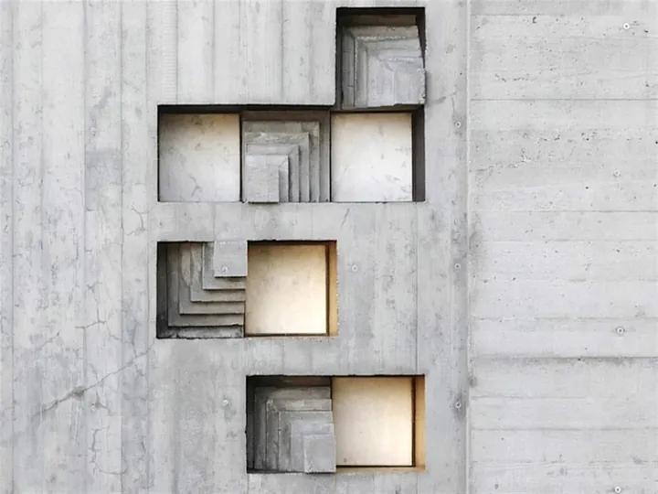

da dom 4 ott a dom 25 ott
Visite guidate speciali
I racconti del Memoriale Domenica 4 ottobre ore 11.00 Mille cipressi Natura e architettura nel Memoriale La vegetazione messa a dimora nel Memoriale è il risultato di progettazioni complesse e appassionate. È un alfabeto verde tutto da esplorare, composto da volumi e segni…
 Indicazioni
Indicazioni
- Costi e prenotazioni
- Costo non indicato · Prenotazione non indicata
- Programma
- Programma da verificare. Apri la fonte ufficiale per orari e possibili aggiornamenti.
- In caso di maltempo
- Nessuna indicazione specifica pubblicata.
- Note
- Acquisito automaticamente dalla fonte.
L’EVENTO
Descrizione completa
I racconti del Memoriale Domenica 4 ottobre ore 11.00 Mille cipressi Natura e architettura nel Memoriale La vegetazione messa a dimora nel Memoriale è il risultato di progettazioni complesse e appassionate. È un alfabeto verde tutto da esplorare, composto da volumi e segni grafici poeticamente integrati nell’architettura di Carlo Scarpa.
Il memoriale visto da vicino: visite con gli specialisti Sabato 17 ottobre ore 11.00 Visita guidata con Orietta Lanzarini Orietta Lanzarin, Professore Associato di Storia dell’architettura DIUM, Università di Udine Il Memoriale Brion è un racconto che racchiude in sé tutta la complessità del pensiero di Carlo Scarpa e il segreto per esplorarlo. Gli episodi che costituiscono l’opera partecipano attivamente all’esposizione di una storia densa di significati. Ma quale? Certamente quella dei coniugi Brion, che “hanno faticato tutta la loro vita” e riposano qui, nei “due sarcofagi…nella parte più solatia”, come fulcro vitale di un luogo che celebra il “senso della campagna”. Scarpa, però, affida alla Tomba Brion anche un importante compito didattico: quello di spiegare, a chiunque la visiti, quale è stato il suo metodo di lavoro e gli strumenti espressivi - le materie, la luce, il colore, l’acqua – delle sue ineguagliabili narrazioni
Carlo Scarpa, il Memoriale Brion e il rapporto con Venezia Domenica 25 ottobre ore 11.00 Vetro, legno, varianti dello stucco lucido, ma anche acqua e luce… I materiali e gli elementi con cui il Memoriale Brion è stato costruito raccontano a più voci il profondo legame di Carlo Scarpa con la sua città, Venezia.
Per partecipare alle visite guidate la prenotazione è sempre obbligatoria.
Nota Bene: le visite guidate speciali sostituiscono le visite ordinarie programmate nello stesso giorno e orario.
IL PROGRAMMA
Programma e orari
Appuntamenti raccolti dalle fonti elencate. Dove manca un orario, non è ancora disponibile in questa scheda.
Programma pubblicato
- 2026-10-04 — 2026-10-04 · 11:00:00
- 2026-10-17 — 2026-10-17 · 11:00:00
- 2026-10-25 — 2026-10-25 · 11:00:00
INFORMAZIONI UTILI
Prima di partire
- Controllare la fonte prima di partire.
ORGANIZZAZIONE